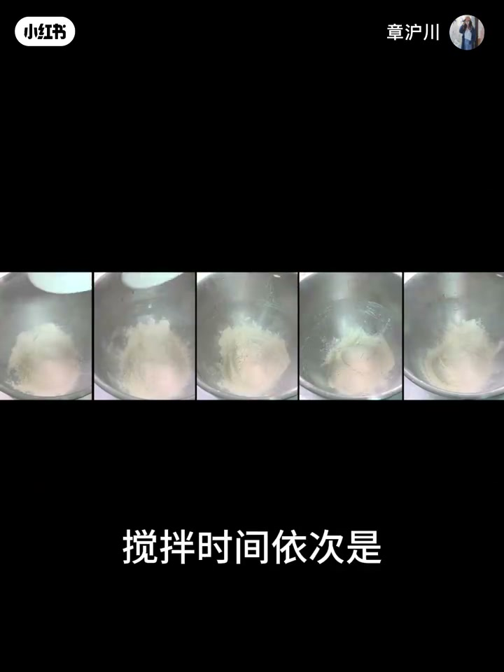
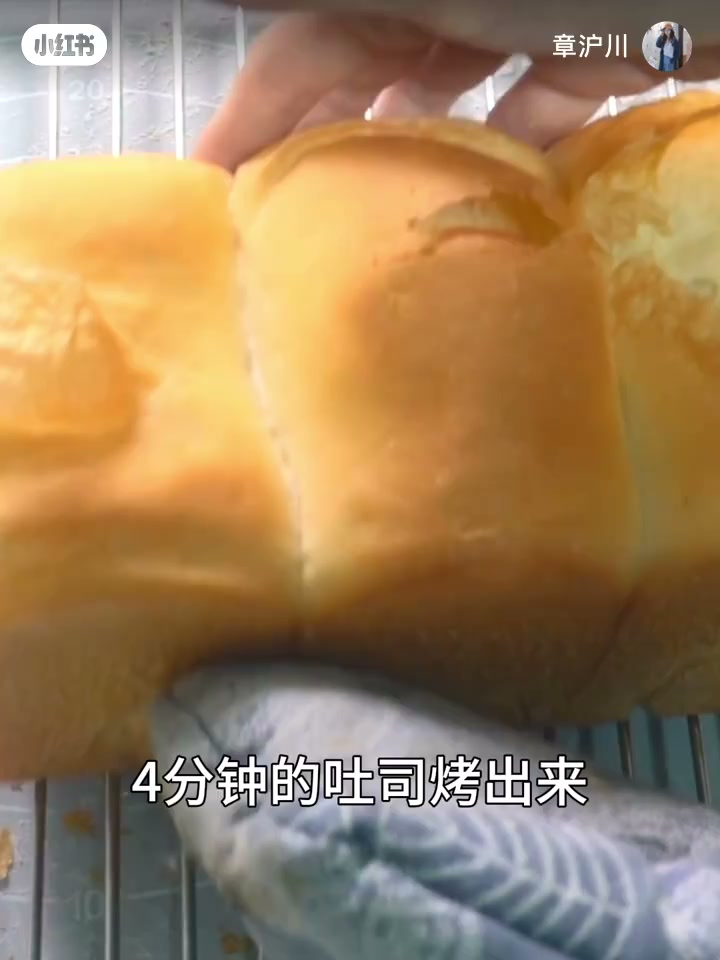
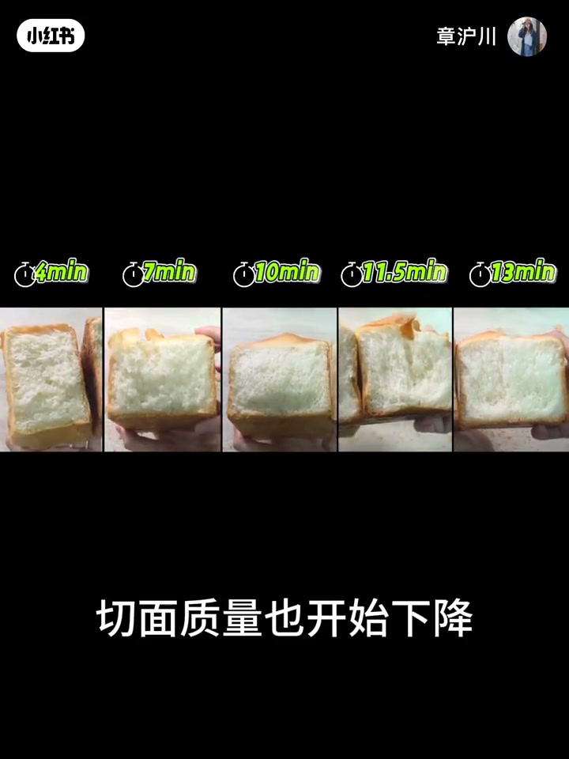
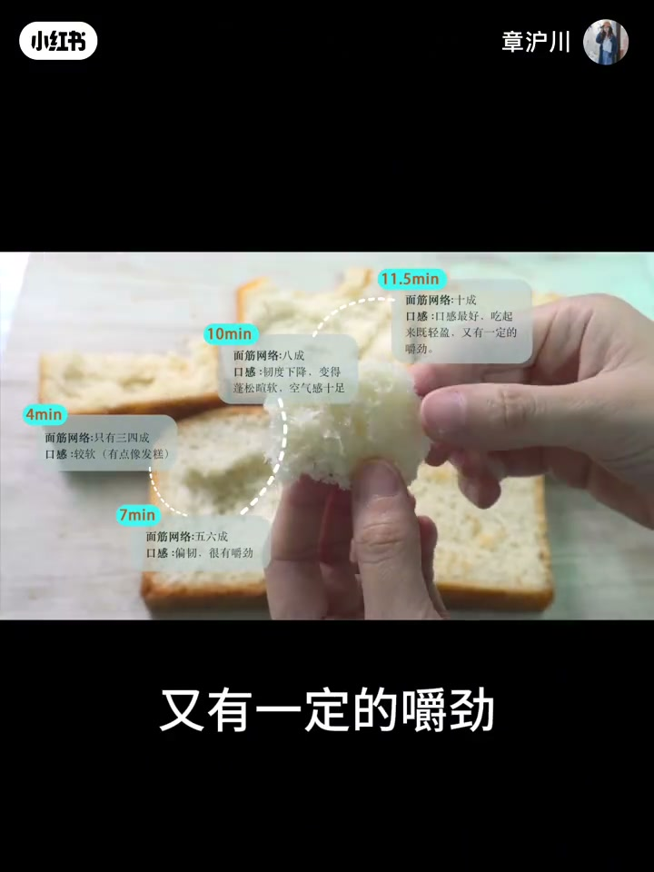
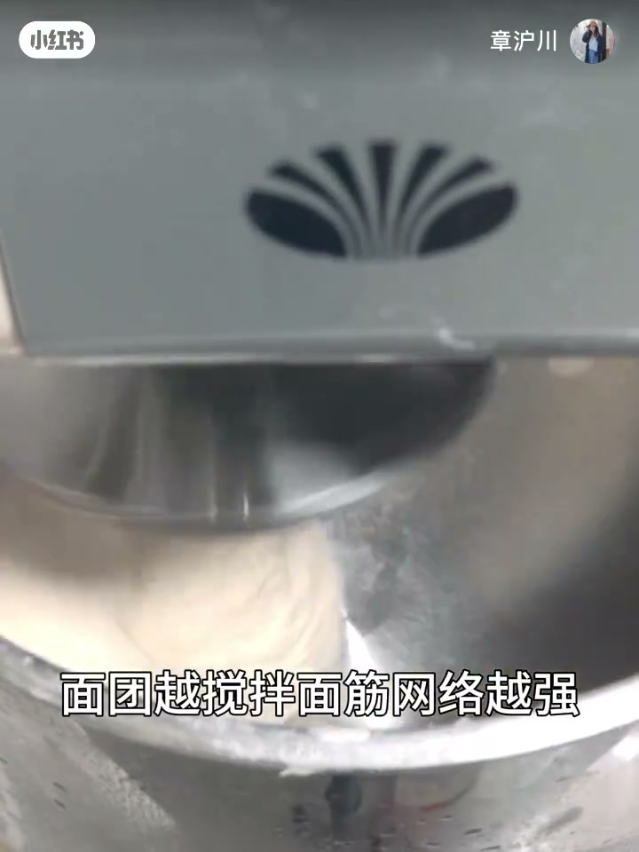
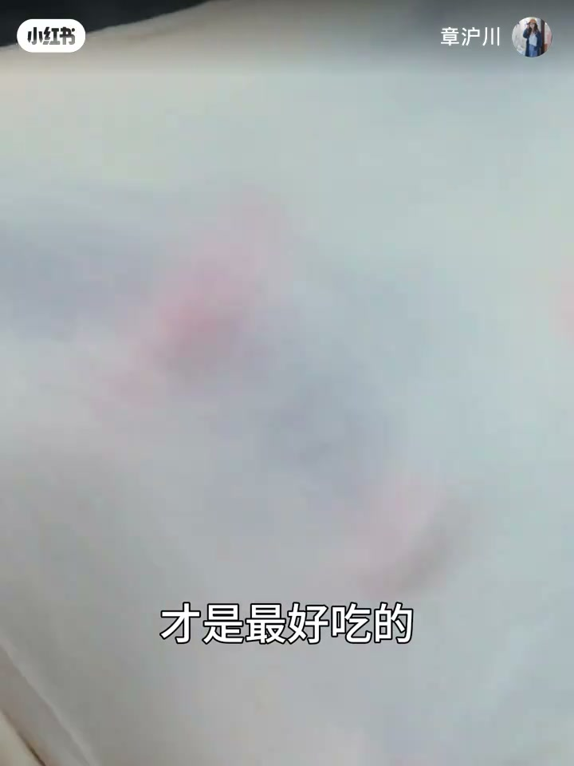

内容要点
知识结构
[00:00→00:35]
实验设计
五档搅拌时间与面筋层数一一对应；其他步骤相同、不加黄油，控变量。
[00:35→01:00]
体积抛物线
前四组越搅越大越轻；4分钟像砖头，11.5分最轻；13分钟过搅体积回落。
[01:00→01:40]
口感反转
4分软粘、7分偏韧；10分后韧度下降变蓬松；手套膜最好吃；过搅又变韧。
[01:40→02:44]
机制与结论
口感=面筋网络强度×兜住的气体；扩展前筋主导偏韧，扩展后气体主导变暄；揉到膜、别过头。
总结
不是揉越久越好：揉到手套膜体积与口感最佳，欠搅与过搅都会削弱支撑力。
图文实录
五档搅拌对照
00:00 – 00:35
开场抛出问题：非得揉出手套膜才最好吃吗？欠一点或过一点差别大不大？作者用山茶花面粉做五组吐司，搅拌时间依次4、7、10、11.5、13分钟，对应面筋三到四层、五到六层、八层、十层与打过头；不加黄油、称量误差≤0.5%、发到九分满再烤。
搅拌时间依次是4分钟 7分钟 10分钟
对应的面筋程度分别是3-4层

[00:15] 实验设定：搅拌时间依次是四档以上对照
Experiment setup: mixing-time controls across multiple batches
体积：越搅越大，过头回落
00:35 – 01:00
前四组随着搅拌到位，吐司体积变大、掂起来更轻盈：4分钟烤出来硬梆梆像砖头；11分半版本轻得夸张，拉丝也越来越明显。最后一组搅拌过头，体积下降、断面质量回落，看起来接近第三组——整体呈先升后降的抛物线。
4分钟的吐司烤出来跟砖头一样硬梆梆的
但11分半的版本

[00:42] 字幕：但11分半的版本——体积与轻盈度峰值附近
Subtitle: but the 11.5-minute version—near peak volume and lightness

[00:55] 过搅后体积下降，趋势呈抛物线
Overmixed loaf shrinks—volume follows a parabola
口感：韧与暄的反转
01:00 – 01:40
4分钟网络只有三四层，吃起来偏软；7分钟明显更韧有嚼劲。按惯性以为再搅会更韧，结果10分钟韧度下降、变蓬松有空气感；11.5分钟打到手套膜时体积最大、口感最好——既轻盈又有一定嚼劲；13分钟断筋后又发韧，接近7分钟。
打到手套膜的吐司体积最大
吃起来既轻盈又有一定的嚼劲

[01:30] 11.5分钟手套膜：口感最好，轻盈又有嚼劲
11.5-min windowpane: best texture, light yet chewy
机制：筋网×气体
01:40 – 02:44
作者总结：面包口感不只看面粉筋度，还看面筋网络兜住多少气体。筋度越高本应更韧，但气体会把口感拉向蓬松；手套膜是网络最结实、兜气最多的时候。扩展阶段前气体不是主因，越搅越韧；扩展到完全扩展后气体占主导，越搅反而越暄。过搅与欠搅一样兜不住气，所以13分钟和7分钟吃起来都发韧。结论：不是揉越久越好，揉到手套膜、别打过头。
所以不是揉的越久越好
揉到手套膜 别打过头 才是最好吃的

[02:10] 机制：面筋网络与气体量共同决定口感
Mechanism: gluten network and trapped gas jointly decide mouthfeel

[02:35] 收束：手套膜怎么判断？关注面食正门课
Close: how to judge windowpane? follow the dough basics series